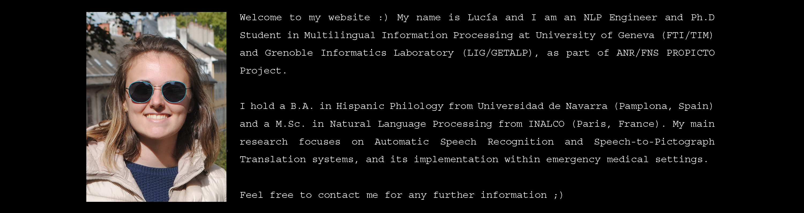

My educational and professional background
December 2020 – Present
Ph.D. Project: « Automated Translation of French speech into pictographs: towards a better accessibility to communication for allophone patients in healthcare settings ».
I am a Candoc grant-holder and I am pursuing a joint Ph.D. between the Department of Translation Technology (TIM) of University of Geneva and the Study Group for Machine Translation and Automated Processing of Languages and Speech (GETALP), attached to the Grenoble Informatics Laboratory (LIG). My main research focuses on Automatic Speech Recognition and Speech-to-Pictograph translation systems.
September 2018 – September 2020
Specialization: Research & Development.
Taken courses:
« Implementation of a robust Automatic Speech Recognition (ASR) system applied to the medical field », [PDF].
September 2014 – June 2018
Extraordinary End-of-Degree Award Nominee.
Taken courses:
December 2020 – Present
As a Candoc Ph.D. Fellow, my work falls within the PROPICTO project, a bilateral research program funded by the French National Research Agency (ANR) and the Swiss National Science Foundation (SNF).
The overall goal of PROPICTO (French acronym standing for PRojection du langage oral vers des unités PICTOgraphiques) is to create Speech-to-Pictograph translation systems and thus to enhance communication access for non-French speakers within emergency medical settings.
February 2020 – September 2020
Participation within the BabelDr project, between the Grenoble Informatics Laboratory and the University of Geneva. Development of an Automatic Speech Recognition (ASR) system applied to the medical field.
Main tasks:
July 2018 – September 2018
ENG > SPA commercial translation: video transcriptions, travel articles, apartment reviews, client testimonials.
September 2016 – June 2017
Research student at the Department of Philology.
Main tasks:
October 2020
MOOC Course introducing Russian Language (Phonetics, Graphemics, Syntax).
May 2020
MOOC Course introducing Data Confidentiality regulations and Privacy Protection.
June 2019
MOOC Course introducing Corpus Linguistics and its many implementations in Lexicology, Discourse Analysis and Natural Language Processing.
June 2018
Fluent in both spoken and written French.
June 2017
Fluent in both spoken and written English.
October 2013
To learn more, click here.

A quantitative research focused on morphosyntactic patterns found on the French newspaper Le Monde.

A series of programming exercises related to the markup language XML and its numerous features.